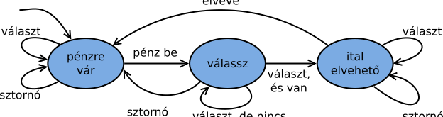
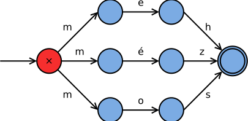
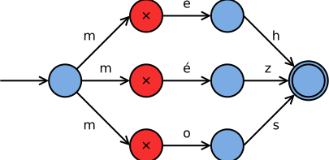
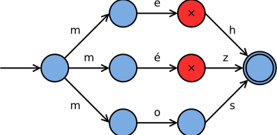
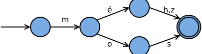

| Szmájli | Ezt kell beírni |
|---|---|
:) :-)
| |
:D :-D
| |
8-)
| |
:(|)
| |
<3
|
Feladat: megkeresni a beírt szövegben a szmájlikat, és utána úgy kiírni a szöveget, hogy képek szerepelnek benne helyettük.
Oldjuk meg ezt minél kevesebb memória felhasználásával!
Lehetne működőképes megoldást csinálni úgy, hogy beolvassuk az egész szöveget egy sztringbe. De ez elég rossz ötlet. Ha látunk egy hosszú szöveget, abban rá tudunk mutatni a szmájlikra, anélkül hogy az előttük vagy utánuk lévő részt ismernünk kellene.
A feladatot elképzelhetjük egy adatfolyam (stream) problémaként. Valaki diktálja nekünk a szöveget (bejövő karakterek), nekünk pedig le kell írni azt (kimenő karakterek). A diktálás közben pedig nem szeretnénk a teljes szöveget, vagy hosszú szövegrészletet a fejünkben tartani.
Karakterek olvasása: a printf, scanf %c-n kívül használhatóak:
int getchar(void); // beolvasint putchar(int); // kiírEzek gyorsabbak, mint a printf és a scanf,
de egyszerre pontosan csak egy karaktert írnak és olvasnak.
Nagyon fontos: a getchar() visszatérési típusa int!
int c; // int
c = getchar();
if (c == EOF)
printf("Bemenet vége!");
else
printf("Karaktert olvastam, kódja: %d", c);A getchar() függvénynek a visszatérési értéke a fájl vége jelet
is tudja jelezni. Ezt úgy oldották meg a C-ben, hogy az stdio.h
tartalmaz egy EOF nevű konstanst, amely ezt jelzi. Ennek a
konstansnak az értéke szándékosan kívül esik a karakter típus ábrázolási
tartományán, hiszen minden olyan szám, ami azon belül van, egy bájt, ami
szerepelhet a program bemenetén is. Emiatt a getchar() függvény
visszatérési értékét char típusban tárolni hiba!
A
getchar()függvény visszatérési típusaint. A visszatérési értékeEOF, ha vége van a bemenetnek, és nem sikerült már beolvasni egy karaktert sem (fájl vége jelnél); és a beolvasott karakter kódja, ha sikerült.
Az elvesző bitek miatt (emlékezzünk: a char
kisebb, mint az int) lesz olyan karakter, amelyet a program
összekever a fájl vége jellel. Természetesen miután meggyőződtünk róla, hogy nem
EOF, már bemásolhatjuk vagy castolhatjuk karakter típusúra. Az EOF konstans
számértékét a C fordítók maguk határozhatják meg. Ezért az is hiba, ha valaki azzal
a feltételezéssel él a forráskódban, hogy EOF = -1!
Egyébként a legtöbb karaktert kezelő függvény, pl. putchar(),
toupper(), isdigit(), … is int típusú
paraméterrel rendelkezik, de a getchar()-ral ellentétben
ez legtöbbször nem lényeges a használatuk közben.
Példa: Blian élete. Az alábbi ploglam minden 'r' betűt 'l' betűle cselél.
#include <stdio.h>
int main(void) {
int c; /* kalaktel */
while ((c = getchar()) != EOF) { /* éltékadás! */
if (c == 'r')
putchar('l');
else if (c == 'R')
putchar('L');
else
putchar(c);
}
return 0; /* letuln zéló */
}A (c = getchar()) != EOF kifejezés működése
a következő:
- Kiértékelődik a
getchar()kifejezés. Erre beolvasódik egy karakter vagy azEOFfájl vége jel. - Ez bemásolódik a
cváltozóba az értékadás miatt. - Az egész zárójelezett kifejezés az értékadás. Ennek értéke a másolt érték, vagyis maga a karakter.
- Ezt hasonlítjuk össze az
EOFkonstanssal. - Ha nem egyenlő vele, akkor karaktert olvastunk, és mehetünk be a ciklusba.
- Ha egyenlő, fájl vége jelet, akkor pedig kiléphetünk a ciklusból.
Fontos a zárójel. Ha az nem lenne ott, akkor az = értékadás
és != egyenlőségvizsgálat operátorok precedenciája miatt
a getchar()!=EOF összehasonlítás eredménye kerülne a c
változóba, nem a karakter! (A legkülső zárójelnek természetesen nincs köze a kifejezéshez, mert az
a while-hoz tartozik.)
Feladat: számoljuk meg a beolvasott szövegben az ly betűket:
- Az
ly1-nek számít:lyuk, - az
lly2-nek:gally, - nagybetűkkel most ne foglalkozzunk.
A probléma nehézsége
Önmagában egyik karakternél sem egyértelmű a teendő!
l-nél: nem tudjuk, mit kell majd csinálni:alma,lyuk,gallyy-nál: a teendő attól függ, előbb mi történt:négy,lyuk
Azt azért sejtjük, hogy a végleges döntés az y karakternél
fog megszületni. Az l-nél nem lehet, hiszen a jövőbe nem látunk. Úgyhogy a második
gondolatmenet a járható út. Eltárolni a teljes szöveget viszont felesleges, hiszen elég mindig
csak egy kis részletet látni belőle.
A kidolgozatlan ötlet az előzőek alapján:
sz = 0;
while ((c = getchar()) != EOF) {
if (c == 'y') {
switch (……… ELŐZMÉNYEK ………) { // !
case ……… és l volt előtte ………: // !
sz += 1;
break;
case ……… és ll volt előbb ………: // !
sz += 2;
break;
default:
break;
}
}
}
printf("%d darab ly szerepelt.\n", sz);Tehát szükségünk van egy változóra, ami azt reprezentálja, mik voltak az előzmények,
mi történt a múltban. Az y karaktert pedig ennek függvényében értelmezzük: nem l
volt előtte, vagy egy l volt előtte, esetleg kettő. Ezt nevezzük állapotváltozónak.
Állapotgép = véges automata (finite-state machine)
Működése: az eddig kialakult állapottól és az eseménytől függ:
- az elvégzendő tevékenység,
- a következő állapot.
Az állapotgép egy olyan gép, program, amely a bemenetei hatására a belső, véges számú állapot között ugrál. Minden bemenet–állapot pároshoz egy, és csakis egy pontosan meghatározott következő állapot (állapotátmenet) tartozik.
Egy állapotgép mindig egy bizonyos állapotban van, és attól függően reagál az eseményekre. Az események hatására állapotátmenet történhet. Az állapotgépet állapotátmeneti gráffal vagy állapotátmeneti táblázattal adjuk meg.
A mostani programjainkban az állapotátmenetekhez tevékenységeket is fogunk társítani.
Példa: italautomata
Az italautomata másképp reagál a sztornó gomb és az italválasztó gomb megnyomására attól függően, hogy be lett-e dobva már a pénz, vagy még nem.
Az állapotgép működését gráffal is megadhatjuk. Ez a megadás teljesen ekvivalens a táblázattal. Minden állapotra (a gráf csúcsai) megadja, hogy az egyes eseményeknél (élekre írt karakterek) mi a teendő. A nyíl az új állapot felé mutat, illetve az elvégzendő tevékenység is a nyíl mellé írva szerepel.
A konkrét példában: alap állapotban egy l hatására még nem történik semmi, de tudjuk, hogy a
következő karakternél figyelni kell, mert az esetleg egy y lehet. Ezért felvesszük az l_volt állapotot.
Alap állapotban a másik két karaktertípus hatására semminek nem kell történnie. Az l_volt állapotban viszont
y esetén növeljük a számlálót, és visszaugrunk alap állapotba (hiszen a következő karakternél már nem lesz igaz, hogy
az ahhoz képest előző l betű volt). Az ll_volt állapotnál viszont egy harmadik l betű esetén
maradunk ugyanabban az állapotban, mert a következő karakternél igaz lesz az, hogy az előző kettő l volt. (Ha van
ilyen magyar szó egyáltalán.)
Az állapotátmeneti gráf sokszor kevésbé áttekinthető, mint a táblázat – ha abból kell kódolni, akkor nehéz lehet követni a nyilakat. Az sem látszik rajta, hogy teljesen definiált-e, szemben a táblázattal, ahol látjuk, hogy minden cellája ki van-e töltve.
Viszont tervezésre, ötletelésre kiválóan alkalmas. Az állapotgép által felismert jelsorozatokat (eseménysorozatokat) is könnyebb ezen felismerni, egyszerűen csak követni kell az átmenetekre (nyilakra, élekre) írt feliratokat.
Tervezzük meg az „ly” számláló állapotgépét! Melyik állapotban, milyen esemény hatására, mi a teendő?
Egy állapotgép működése rögzíthető egy állapotátmeneti táblán, pongyolán fogalmazva egy állapottáblán. A táblázat sorai az egyes állapotokat jelentik (amelyekbe valamely régebbi események alapján került az automata). A táblázat oszlopai pedig az eseményeket (ezek most a beérkező karakterek). Minden eseménynél, vagyis minden karakter olvasásánál az aktuális állapottól és az éppen beolvasott karaktertől függően dől el az, hogy mit kell csinálni (tevékenység) és hova kell ugrani (állapot). Gyakran ezt két külön táblázatban adják meg – lentebb az állapot- és tevékenységtábla egy táblázatba összegyúrva szerepel.
Az állapottábla nagyban segíti a tervezést, amelynek menete a
következő. Először felvesszük egy táblázat oszlopaiba a számunkra érdekes eseményeket (jelen
esetben ezek az l, az y és az összes többi karakterek). Utána az első
sorba az alapállapotot, ahonnan indul az automata. Végiggondoljuk, hogy ebben az állapotban mely
eseményre (karakterre) minek kell történnie. Ha kell, új állapotokat veszünk föl; és addig
folytatjuk, amíg van kitöltetlen sora a táblázatnak.
| l | y | egyéb | |
|---|---|---|---|
| alap | →l_volt | - | - |
| l_volt | →ll_volt | sz += 1, →alap | →alap |
| ll_volt | - | sz += 2, →alap | →alap |
| k | u | l | c | s | l | y | u | k | , | g | a | l | l | y |
Az „ly” számláló állapottáblája tehát a következőket jelenti:
- Az alap állapot: semmi, amire figyelni kellene. Ez egyben a kiindulási állapot is.
- Ha jön egy
lbetű, átmegyünk l_volt állapotba.- Ha ilyenkor jön egy
y, akkor a számlálót növelni kell +1-gyel (és → alap!) - Ha viszont még egy
l, akkor meg ll_volt állapotba. Azért, mert ha harmadikkéntyérkezik, akkor +2 kell a számlálóba. - Ha bármi más, akkor viszont vissza alap állapotba (pl. almafa, az
lutánmbetű jött).
- Ha ilyenkor jön egy
Az állapot eltárolásához a legjobb választás egy felsorolt típus,
enum. Megtehetnénk, hogy mi magunk számozzuk be az állapotokat, de akkor a
programkód követhetetlen lenne. Így viszont olvasható lesz!
typedef enum LyAllapot {
alap,
l_volt,
ll_volt
} LyAllapot;LyAllapot all = alap;
while ((c = getchar()) != EOF) {
switch (all) {
case alap: // alap állapot
if (c == 'l')
all = l_volt;
break;
case l_volt: // már volt egy 'l'
switch (c) {
case 'l': all = ll_volt; break;
case 'y': szaml += 1; all = alap; break;
default: all = alap; break;
}
break;
case ll_volt:
/* ... */Minden beérkező karakternél a tevékenység és a következő
állapot is függ a beérkező karaktertől és az állapottól. Más például a teendő egy
beérkező y karakternél akkor, ha előzőleg l betűt
láttunk. Ezért minden karakter feldolgozásánál a táblázat egy cellájából kell
kiolvasnunk a teendőket. Ez alapján a kódban egy esetszétválasztást csinálhatunk,
ami viszont triviális: a meglévő állapottábla alapján a programkód
szisztematikusan, szinte gondolkozás nélkül elkészíthető!
szmajli.c
Az eddigiek alapján a táblázat könnyen elkészíthető, most az egyszerűsítés kedvéért csak két szmájlira:
| normál | : | ) | < | 3 | |
|---|---|---|---|---|---|
| alap | →alap c | →kettőspont (semmi) | →alap c | →kisebb (semmi) | →alap c |
| kettőspont | →alap :, c | →kettőspont : | →alap | →kisebb : | →alap :, c |
| kisebb | →alap <, c | →kettőspont < | →alap <, c | →kisebb < | →alap |
Itt is az állapotgép táblázatában minden cella tartalmaz egy következő
állapotot (fent) és egy tevékenységet (lent). A tevékenység minden esetben
valamilyen karakter vagy karakterek kiírását jelenti. c-vel jelöltük
az épp beolvasott karakter képernyőre másolását; a többi kiírásnál pedig a megadott jelet
kell majd a programnak kiírnia (pl. kisebb jel vagy kettőspont).
Mivel minden oszlopban ugyanaz az állapotátmenet, egyszerűbbnek tűnik az esemény (karakter) szerint csinálni az első esetszétválasztást:
while ((c = getchar()) != EOF) {
switch (c) {
default:
switch (all) {
case Alap: printf("%c", c); break;
case Kettospont: printf(":%c", c); break;
case Kisebb: printf("<%c", c); break;
}
all = Alap;
break;
case ':':
switch (all) {
case Alap: /* semmi */ break;
case Kettospont: putchar(':'); break;
case Kisebb: putchar('<'); break;
}
all = Kettospont;
break;Az állapot- és tevékenységtábla kézzel történő leprogramozása (ti. a hatalmas switch-ek)
helyett lehet egy sokkal okosabb ötletünk is.
Táblázat → csináljunk 2D tömböt a kódban!
- Minden cellában egy tevékenység és egy állapot. Ez azt jelenti, hogy a táblacella egy struktúra.
- Az állapot: a következő állapot kódja.
- A tevékenységek: mi a teendő.
A tevékenység az ly számláló példájában könnyen leképezhető akár egy egész számra: mennyivel kell növelni a számlálót. Összetettebb esetben függvénymutatókat lehet ehhez használni.
Az adatszerkezet: struktúrák kétdimenziós tömbje.
typedef struct TablaCella {
Allapot kovetkezo;
int tevekenyseg;
} TablaCella;
TablaCella tabla[3][3] = { ... };Kérdés, hogyan fogjuk ezt a tömböt indexelni.
Az állapotból és a karakterből is tömbindexet kell csinálni:
- A sorokat az állapot szerint indexeljük:
tabla[all] - Az oszlopot a karakter szerint indexeljük:
tabla[all][kar_o] - Azon belül pedig pl.
tabla[all][kar_o].allapot
typedef enum LyAllapot { // állapot → 0...2 egész szám
alap = 0,
l_volt = 1,
ll_volt = 2,
} LyAllapot;
int karakterosztaly(char c) { // char fajtája → 0...2 egész szám
switch (c) {
case 'l': return 0;
case 'y': return 1;
default: return 2;
}
}Az állapotnál egyszerű a feladatunk. Azt amúgy is felsorolt típussal ábrázoljuk, és az enum-ok
konverzálhatók int típusú értékké. Akár hagyhatnánk is a fordítónak, hogy 0-tól kezdődően a természetes számokat
hozzárendelje az egyes állapotokhoz – de mivel tömbindexnek fogjuk ezeket használni, érthetőbb lesz a kód, ha megadjuk ezeket.
A karakter fenti switch szerkezetében a break utasítások elhagyhatóak, hiszen a
return utáni részek úgysem hajtódnak végre a függvényből. Kicsit „sormintás”, de ha nem így lenne, akkor meg egy 256
elemű tömbre lenne szükségünk (ennyiféle bájt van), amiben szinte minden érték nulla, csak néhány másik van – úgyhogy most jó lesz
ez a megoldás is.
A táblázat
lyszaml_tabla.c
TablaCella allapotgep[3][3] = {
{{l_volt, 0}, {alap, 0}, {alap, 0}},
{{ll_volt, 0}, {alap, 1}, {alap, 0}},
{{ll_volt, 0}, {alap, 2}, {alap, 0}},
};A táblázat egy az egyben megfelel az állapotátmeneti táblázatnak, amelyet először rajzoltunk ehhez a feladathoz.
A táblázatot használó kód
while ((c = getchar()) != EOF) {
int kar = karakterosztaly(c);
szaml += allapotgep[all][kar].tevekenyseg;
all = allapotgep[all][kar].kovetkezo;
}Vagyis minden beolvasott karakterre csak kiolvassa a táblázatból a tevékenységet és a következő állapotot.
Előnyök
sorrendi hálózatok
- Tervezésnél: a tervezés eszköze!
- A felesleges állapotok kiszűrhetők
- Kódolásnál: mechanikusan kódolható
- Áttekinthetőbb, érthetőbb a kód, mint egy ad-hoc megoldás
Felhasználásuk
- Szűrőprogramok (fájlok feldolgozása); fordítóprogramok, nyelvi elemzők
(pl.
/* kommentek */kiszűrése) - Grafikus alkalmazások vezérlése (pl. egérkattintások, mozdulatok)
- Internetes alkalmazások kommunikációja (protokollok)
- Hardver: a processzor egy nagy állapotgép!
Hardver oldalról is fontos az állapotgép. A számítógép belseje is tele van ilyenekkel. A processzor működését is egy állapotgép vezérli: utasítás beolvasása, beolvasott utasítás dekódolása, utána további operandusok beolvasása (már a dekódolt utasítás jelentése alapján) stb. Erről a Digit tárgyban van szó.
Feladat: keressük ki egy C forráskódból a kommenteket!
Reguláris kifejezés (regular expression, regex)
Forráskód
printf("Hello, vilag!\n"); /* első komment */
i = i + 123;
return 0; /* második komment */
Forráskód
printf("Hello, vilag!\n"); /* első komment */
i = i + 123;
return 0; /* második komment */
Reguláris kifejezés (regular expression, regex)
A szövegfeldolgozási feladat legegyszerűbben egy ún. reguláris kifejezéssel (regular expression, regex) oldható meg. A
kifejezés így fest: /\*.*?\*/ – hogy ennek az egyes karakterei pontosan mit jelentenek, és hogy a neve honnan jön,
arról rövidesen szó lesz.
A reguláris kifejezésekkel szövegformátumok, mintázatok írhatóak le. Ilyeneket szövegfeldolgozásban, formátumok ellenőrzésekor
használnak leggyakrabban. Próbáld ki: ha \d+ kifejezést adsz meg, a program kikeresi a számokat a forráskódból. Ha
".*?"-t írsz (idézőjelekkel együtt), akkor pedig a sztringet találja meg a program.
A reguláris kifejezéseket főként az alábbi két feladat elvégzésére használják.
Formátumvalidáció
Bankkártyaszám
123 5678 1234 5678 1234 5678 1234 5678 1234 5678 12q34 5678 1234-5678-1234-5678
E-mail cím
barki@.example.com elektro.m.agnes@pikac.hu kicsoda#example.com valaki@pikac.hu
Az első feladattípus: formátumok validációja. Például ellenőrizni szeretnénk, hogy a felhasználó helyes formátumban adta-e meg egy űrlapban az adatait. Helyes-e a bankkártyaszáma? Ez egy 16 számjegyet tartalmazó sztring kell legyen, ahol a számjegyek négyesével vannak csoportosítva, és a csoportok szóközök elválasztva. Ha az elválasztás nem szóközökkel történik, vagy valahol nem négy számjegy van, esetleg véletlenül egy betű kerül a sztringbe, akkor a formátum helytelen.
Hasonló az email cím vizsgálata. Ehhez az kell, hogy középen legyen egy kukac, @ karakter (pontosan egy, nem több, nem kevesebb). A kukac előtt a felhasználó neve, a kukac után pedig a szolgáltató neve kell legyen. Az utóbbi pontokkal elválasztott nevekből kell álljon stb. Ezeket a szabályokat írja le a megadott minta.
Ezeknél a feladatoknál a formátum nyelvtani szabályait sokkal egyszerűbb leírni egy reguláris kifejezéssel, utána pedig egy ilyeneket kezelő programra bízni a feldolgozást, mint egy ad-hoc függvényt írni az ellenőrzésre.
Szövegrészek keresése
Kommentek tartalma
printf("Hello, vilag!\n"); /* első komment */
i = i + 123;
return 0; /* második komment */
A másik gyakori használatban egy szöveg valamilyen mintázatra illeszkedő részeit szeretnénk megtalálni, kigyűjteni. Például a Doxygen program a kommenteket képes kigyűjteni egy forráskódból. A fentebb megadott kifejezést is hasonlót csinál: megkeresi a forráskódból a kommenteket, és kigyűjti a kommentek belsejét. Vagyis a kezdő /* és a befejező */ karakterpárossal már nem foglalkozik, és eldobja a nyitó és záró szóközöket is. Így jutunk a kód alatt kilistázott sztringekhez.
| Regex | Jelentés | Példák |
|---|---|---|
| ab? | Opcionális | a ab |
| ab+c | Ismétlés (legalább 1) | abc abbbc ac |
| ab*c | Ismétlés (akár 0) | abbbc ac |
| a{5} | Ismétlés (adott számú) | aaaaa aaaa |
| (ab)+ | Csoportosítás (blokk) | ababab bbaa |
| \d | Számjegy | 123 abba |
| \w | Számjegy vagy betű | kort123 -+() |
| [0-9A-F] | Karakterlista v. -tartomány | FCE2 zsák |
| . | Bármilyen karakter | bármi \n |
| ^alma | Sztring/sor eleje | almafa hatalmas |
| fa$ | Sztring/sor vége | körtefa téglafal |
Hogy jön a reguláris kifejezések témája az állapotgépekhez? Úgy, hogy sok reguláris kifejezés könnyedén állapotgéppé alakítható. Erre mutatunk a következőkben néhány példát, azzal a megjegyzéssel, hogy a téma matematikájába nem megyünk bele. Ez annak tisztázásához lenne szükséges, hogy pontosan mely reguláris kifejezések írhatóak le állapotgépekkel és melyek nem – ez majd az Algoritmuselmélet c. tárgyban fog szerepelni.
Vezessünk be előbb néhány jelölést! Vegyünk példának egy olyan állapotgépet (véges automatát), amelyik az
^ly$ sztringet próbálja meg illeszteni. (Oké, ez egy egyszerű sztringösszehasonlítással is megoldható, de most a rajz
jelölései a lényegesek.) Ez azt mondja, hogy a sztring elején jönnie kell egy l betűnek, aztán egy y
betűnek, végül pedig nem lehet már más.
^ly$ kifejezést illesztő automataAz automata 4 állapotot tartalmaz.
- Az 1-essel jelölt állapot a kezdőállapot. Ezt onnan ismerjük meg, hogy kívülről egy nyíl megy bele.
- Innen
lbetű hatására a 2-essel jelölt állapotba megyünk. Bármi más karakter hatására a 4-es állapotba. - A pirosra színezett 4-es állapot a visszautasítást jelöli. Ha ide jutunk, az azt jelenti, hogy a sztring nem illeszkedett.
Például ha nem
lbetűvel kezdődött, akkor az 1→4 állapotátmenet után a feldolgozást be is fejezhetjük. - Az
yhatására a 2-es állapotból a 3-asba ugrik az automata. Ez az ún. elfogadó állapot, ugyanis ha itt vége lett a sztringnek, akkor tényleg egy"ly"-ról volt szó. Ha jönne még karakter, akkor viszont innen is a 4-esbe ugrik az automata – a visszautasításhoz, mert azyután már nem lehetne semmi.
^ly$ kifejezést illesztő automata, egyszerűbb jelölésselEz a rajz ugyanazt mutatja, mint a fenti, csak egyszerűbb jelölésekkel.
- A kezdőállapotot ugyanúgy jelöljük – kívülről belemutató nyíllal.
- A visszautasító állapotot nem jelöljük. Ha bárhol olyan bemenetet kap az automata, amihez nem tartozik jelölt átmenet, akkor azt jelölés nélkül elutasításnak tekintjük.
- Ezzel együtt értelemszerűen az „egyéb” feliratú átmenetek is eltűntek az ábráról.
- Az elfogadó állapotot duplán bekarikázás jelöli.
A következő példákban az egyszerűség kedvéért mindig teljes sztringet próbálunk illeszteni; vagyis a
reguláris kifejezés elején mindig ^, a végén mindig $ lesz.
A reguláris kifejezés illesztéséhez tehát építeni kell egy véges automatát. Nézzük meg néhány egyszerűbb esetben, hogy működik ez!
^ab+c$ kifejezéshez tartozó automataA + operátor egy vagy több előfordulást jelent. Tehát a sztring elején kell legyen egy
a betű. Utána kell jönnie egy b betűnek, ami újabb állapotátmenetet eredményez. Innen két úton
mehetünk tovább. Jöhet még b betű, akkor nem váltunk állapotot (tehát emiatt akármennyi további b
betűt „megeszünk” ezen a ponton). Vagy egy c betű, aminek hatására az elfogadó állapotba kerülünk.
^(ab)+c$ kifejezéshez tartozó automataMi történik, ha teszünk egy zárójelet az ab köré? Ilyenkor a + ismétlés operátor
az ab karaktersorozatra vonatkozik, nem csak a b betűre. Vagyis az abc, ababc,
abababc és hasonló sztringeket találja meg ez a kifejezés. Véges automatával ez is könnyen megvalósítható: amikor
a b betű utáni állapotban vagyunk, onnan a betű hatására abba az állapotba kell visszamenni, amelybe
a kezdeti a betű által is kerültünk. Így egy újabb b következhet majd, kiadva a második ab
sorozatot. De ez megtörténhet bárhányszor.
^ab*c$ kifejezéshez tartozó automataA * operátor is ismétlést jelent, de ez elfogadja a nulla darab előfordulást is. Vagyis
az ^ab*c$ reguláris kifejezésre az "ac" sztring is illeszkedik; a közepén nulla darab b
betűvel. Ezért az a betű utáni, középső állapotból a b betű hatására nem mozdulunk el. Ha egyáltalán
nincs b a sztring közepén, hanem az a után máris c jön, akkor elfogadjuk a sztringet.
Ha viszont jön b, az nem változtat ezen a helyzeten.
^ab?c$ kifejezéshez tartozó automataAz ^ab?c$ kifejezésben a b megjelenése opcionális. Vagyis ez csak az
"ac" és "abc" sztringekre illeszkedik. Az a utáni c-vel így egyből elfogadó
állapotba jut a keresés. Ha az a után b jön, akkor egy másik állapotba kerül az automata – ahonnan persze
c hatására ugyanúgy továbbhalad, mintha a b karakter nem jelent volna meg a sztringben.
Fontos látni a különbséget eközött és a * operátor között. A * esetén a gráfon
hurokél jelenik meg, vagyis ugyanabban az állapotban marad az automata, mint előtte. Emiatt illeszthető a * előtti
rész, vagyis a b betű bárhányszor. Itt viszont mindenképpen tovább kell haladni, hogy a b-t maximum
egyszer illesszük csak.
A C nyelv nem tartalmaz beépítetten reguláris kifejezéseket feldolgozó függvényeket. (Más, ennél nagyobb nyelvekben, pl. C++, Java, Python, ... van ilyen gyárilag is.) Viszont könnyű ilyet telepíteni, például a PCRE könyvtár a legtöbb operációs rendszeren rendelkezésre áll. Ez a „Perl Compatible Regular Expressions” rövidítése, mert a reguláris kifejezéseknek pont azt a dialektusát használja, mint amelyet a Perl programozási nyelv is.
A használatnak két lépése van. Az első lépés az, hogy „le kell fordítanunk” a reguláris kifejezést. Ekkor a program ellenőrzi annak szintaxisát, és felépíti azt az állapotgépet, és egyéb más adatszerkezeteket, amikre később egy adott sztring illesztésekor szüksége van.
#include <pcre.h>char const regex[] = "ak+e";
const char *error;
int erroffset;
pcre *re = pcre_compile(
regex, 0, /* regex + opciók */
&error, &erroffset, /* hibajelzéshez */
NULL
);
if (re == NULL) {
printf("Hibás a %d pozícióban: %s\n", erroffset, error);
return 1;
}
/* ... használat ... */
pcre_free(re);A fordítás utána kapunk egy pcre * típusú pointert, amelyen keresztül az adatok hivatkozhatóak.
A hibajelzés módja a szokásos: NULL pointer jelzi, ha hiba történt. Amúgy pedig, ha már nincsen szükségünk az
illesztéshez szükséges adatokra, akkor a pcre_free() függvénnyel felszabadítjuk azokat. Hogy milyen adatokról van
szó pontosan, azzal nem kell foglalkoznunk, a PCRE könyvtár belső működéséhez szükségesek, és az tudja, hogy hogyan kezelendőek.
Ha létrejött a pcre objektum, akkor az illesztést a pcre_exec() függvény végzi.
Ennek egy halom paramétere van, amelyek most nem lényegesek – a fontosakat a komment is jelzi.
char szoveg[] = "Nyakkendő és aknakereső."; // ak+e
int pos[3];
int rc = pcre_exec(
re, NULL, /* compiled regex */
szoveg, strlen(szoveg), /* a sztring */
0, 0, /* start, opciók */
pos, 3 /* eredmény tömb és méret */
);
if (rc < 0) {
if (rc == PCRE_ERROR_NOMATCH)
printf("Nem illeszkedett.\n");
else
printf("Hiba történt, hibakód: %d\n", rc);
} else {
printf("Illeszkedett: %d-%d.\n", pos[0], pos[1]);
}Illeszkedett: 2-6.
A függvény először is megkapja a pcre_compile() által épített adatszerkezeteket. Meg kell adni
neki a vizsgált sztringet és annak hosszát (lehetne benne akár \0 is). Meg kell adni a kezdő pozíciót: ennek akkor
lenne jelentősége, ha a mintára több részlet is illeszkedne, ugyanis azt egymás utáni függvényhívásokkal kapnánk meg. Végül
pedig, adni kell egy tömböt, ahova az eredményt teszi. Ha a találat pozíciója nem érdekelne minket (hanem egyszerűen csak az,
hogy van-e a sztringben olyan rész, amelyre a minta illeszthető), akkor adhatnánk ehelyett is NULL pointert.
Hiba esetén negatív számot kapunk. Ha viszont illeszkedést talált a függvény, akkor a pos[]
tömbbe beírja, hogy mettől meddig. Jelen esetben ezek a 2–6 karakterek, mert a "Nyakkendő és aknakereső."
sztringben a nyakkendő szó „akke” része illeszkedik az ak+e mintára. Ha kíváncsiak lennénk, a sztring fennmaradó
részében van-e még ilyen, akkor a 6-odik start pozíciótól kellene újra megpróbálnunk az illesztést, és meglenne az aknakereső
„ake”-je is.
A zárójelekben megadott alkifejezések (csoportok, blokkok – grouping) szerepe valójában kettős. Ezzel nem csak
precedenciát adhatunk meg, mint pl. az (ab)+ kifejezésben, ahol az ismétlés nem csak a b-re, hanem az
ab karaktersorozatra vonatkozott. Az illesztett reguláris kifejezéseken belül a csoportok által meghatározott
karaktersorozatokat a PCRE könyvtár, és más regex motorok külön is képesek kigyűjteni (capture). Így a találatok esetén azok egyes
részeit külön is megkapjuk sztringek formájában.
Kommentek tartalma
printf("Hello, vilag!\n"); /* első komment */
i = i + 123;
return 0; /* második komment */
Vizsgáljuk meg, mit csinál a nyakatekert /\*\s*(.*?)\s*\*/ reguláris kifejezés!
/\*, azaz előbb jönnie kell egy/és egy*karakternek. Itt a csillag elé visszaper kellett, mert a csillag karakterre gondolunk, nem pedig a perjelek ismétlésére.- Ezután jöhet bármennyi szóköz vagy tabulátor, a
\s*megeszi ezeket. - Utána jöhet bármilyen karakterből bármennyi:
(.*?), erre a részre viszont kíváncsiak vagyunk, ezért be van zárójelezve. - Aztán jöhet bármennyi szóköz:
\s*, végül pedig egy csillag és egy perjel kell következzen:\*/.
Lényegében tehát megtaláltunk egy C kommentet, mert perjel-csillaggal kezdődő, csillag-perjellel befejeződő sztringrészletre fog illeszkedni ez a reguláris kifejezés. A közepén lévő részt külön sztringben is szeretnénk megkapni. Leszámítva az elején és a végén lévő szóközöket, mert azok nem érdekelnek minket, tehát tisztán csak a komment szövege.
E-mail cím részei
kicsoda#example.com valaki@pikac.hu
Az email címeknél hasonló a helyzet. A kukac két oldalán álló részeknek külön jelentése van. Az előtte álló egy felhasználónév. Az utána álló pedig a szolgáltató, amelyik az e-mail tárhelyet adja; technikailag ez egy számítógép neve az Interneten. Ezért ha a reguláris kifejezésben a kukac előtti és utáni részekre illeszkedő részletet bezárójelezzük, akkor a regex motor kivágja nekünk ezeket a részsztringeket. Vagy nem vág ki semmit, ha az e-mail cím hibásan van megadva, és az egész sztring nem illeszkedik.
A PCRE könyvtár a regex illesztése közben a megjelölt blokkok részsztringjeit is vissza tudja adni.
Ehhez az eredmények tömböt nagyobbra kell vennünk: a pos[] tömb ugyanis ilyenkor nem csak a teljes illeszkedő
szövegrészt fogja megmutatni, hanem a megjelölt blokkokat is. A tömb mérete 3-mal osztható kell legyen; benne az egész számok
páronként a találatok és blokkok helyét mutatják az eredeti sztringben, illetve a tömb végét ideiglenes tárolónak használja
a függvény (ezzel nem kell foglalkoznunk).
char const regex[] = "^([\\w.]+)@(\\w+(?:\\.\\w+)*)$";
char szoveg[] = "valaki@pikac.hu";
char resz[100];
int pos[9];
int rc = pcre_exec(/* ... paraméterek ... */);
/* ... hibakezelés helye... */
strncpy(resz, szoveg + pos[2], pos[3] - pos[2]);
resz[pos[3] - pos[2]] = '\0';
printf("Felhasználó: %s\n", resz);
strncpy(resz, szoveg + pos[4], pos[5] - pos[4]);
resz[pos[5] - pos[4]] = '\0';
printf("Gép: %s\n", resz);Tegyük fel, hogy a paraméterként adott sztring illeszkedik. Ekkor az alábbi eredményeket kapjuk:
- A visszatérési érték nem hibakód (negatív szám lesz). Valójában a visszatérési érték azt mutatja, hány számpárt tett
a
pos[]tömbbe a függvény. - Az első számpár,
pos[0]éspos[1]az illeszkedő részt mutatja. Jelen esetben ez a teljes sztring. - A Következő számpárok pedig a megjelölt blokkokat;
pos[2]–pos[3]pár a felhasználónév részt,pos[4]–pos[5]páros pedig a kukac utáni részt.
Minden megadott tartomány balról zárt, jobbról nyílt. Ha ezeket használni szeretnénk sztringként, akkor legegyszerűbb, ha az
eredeti sztringből kimásoljuk azokat. Arra kell figyelni, hogy a megadott tartományok az eredeti sztring belsejébe mutatnak; vagyis
a kimásoláskor nem támaszkodhatunk a lezáró nullákra. Ezért kell a strncpy() függvényt használnunk, amelynek a maximum
írandó karakterek számát is meg tudjuk adni. Mivel ez sajnos lezáró nullát nem tesz a cél tömbbe, azt külön beleírjuk.
A blokkokra a reguláris kifejezéseken belül is lehet hivatkozni. Ezt a visszaper karakterrel lehet jelölni; az
utána írt szám a kifejezésben szereplő blokkra utal, azok megjelenési sorrendjében. Az (a+)b\1 reguláris kifejezés
ezért azt jelenti, hogy jönnie kell egy vagy több a betűnek (amennyi volt, azt megjegyezzük egy sztringben), aztán a
következő karakter egy b betű kell legyen, végül pedig az első megjegyzett sztringrészlet újra. Vagyis pont ugyanannyi
a betű kell legyen az illesztett sztring végén is, mint amennyi az elején volt.
aba aaabaa aaabaaa aabaaa
Milyen állapotgépet konstruálnánk ehhez? Ha az elején egy a betű volt, a végén is egy kell legyen.
Ha kettő, akkor olyan állapotba kell kerülni, ahonnan egy b betűvel és két további a betűvel lehet az
elfogadáshoz jutni. (A többszörös egymás utáni állapotátmeneteket most csak pontozott vonallal jeleztük, hogy áttekinthető legyen
a rajz.) A három a betűs kezdethez is tartoznia kell egy állapotnak, a négy betűshöz is, és így tovább. Az állapotokba
írt számok azt jelölik, hány kezdő a betű hatására lehet oda eljutni.
Azt vesszük észre, hogy a tetszőlegesen sok a ismétlődés és a visszahivatkozás miatt
tetszőlegesen sok állapottal kellene rendelkeznie az automatának. Így viszont nem lenne véges, vagyis ez a feladat
nem oldható meg véges automatával.
A matematikában használt reguláris kifejezés fogalom ezért különbözik a programozásban használt reguláris kifejezésektől. Az utóbbiak többféle szabályt tartalmazhatnak, és a lehetséges szabálytípusok között vannak olyanok is, amelyek már nem írhatóak le állapotgépekkel. (Hogy melyek ezek, arról az Algoritmuselmélet c. tárgyban lesz szó.) Ilyen a visszahivatkozás is. Az összetettebb kifejezéseket feldolgozni képes könyvtárak, mint amilyen pl. a PCRE is, nem mindig állapotgépekkel dolgoznak.
Hasonló talány a .*-ot tartalmazó kifejezések illesztése. Mit jelent vajon a .*a reguláris
kifejezés? Ennek a .* része tetszőlegesen hosszú karaktersorozatra illeszkedhet – vagyis a teljes bemenetre. Ha
ehhez tartozóan „elfogyasztjuk” a teljes bemenetet, akkor hogyan lenne lehetséges, hogy utána még egy a betű jön?
Lehetséges, hogy a .*a kifejezés semmire nem illeszkedik?
Valójában ez nem igaz, mert a legelső példában a C komment belsejének illesztését is egy .* kifejezésrészlettel
végeztük, mert ott lehetett bármi. A *, azaz ismétlés operátor a fejlett reguláris kifejezéseket feldolgozó
programokban próbálkozást jelent: próbáljuk meg az illeszkedést valahány karakterrel (valahány karakter ismétlését), és ha nem,
akkor próbáljuk meg kevesebbel.
Lássuk, mit jelent ez a gyakorlatban! Mindkét alább látható reguláris kifejezés az illesztett szövegrészlet elején és végén is
idézőjelet vár, vagyis a forráskódból a sztringeket keresi ki. A különbség csak a sztring belsejére illeszkedő .* és
.*? részletekben van, vagyis abban, hogy * vagy *? operátort használunk.
* – a lehető legtöbb
char h[] = "helló", v[] = "világ";
A .* ezzel szemben a lehető leghosszabb illeszkedést jelenti. Vagyis a keresés közben először
elmegyünk a sor végéig, és aztán ha a kifejezés nem illeszkedik, elindulunk visszafelé, kevesebb karakterrel próbálkozunk. Nyilván
a sor vége után nem lesz bezáró idézőjel (hogy is lehetne, hiszen elfogyott a sor), ezért visszafelé kell lépkedni onnan.
Így viszont nem az első sztringet bezáró idézőjelet fogja megtalálni, hanem a másodikét – és a kettő között még ott van a
v[] tömb deklarációja is.
A leghosszabb megoldás megkeresése miatt ezt mohó (greedy) ismétlésnek nevezzük. A sztringek
megtalálására ez nem alkalmas, csak a .*? működik helyesen.
*? – a legkevesebb
char h[] = "helló", v[] = "világ";
A *? a lehető legrövidebb illeszkedést jelenti. Vagyis miután a motor megtalálta a sztringet
nyitó idézőjelet, feltételezi, hogy a .* nulla karakterre illeszkedik. Ez azonban nem jön be, mert a sztring nem üres,
tartalmaz szöveget. Ezért egyre hosszabb sztringrészletekkel próbálkozik: h, he, hel, hell, helló... Végül sikerrel jár, mert a
sztring teljes tartalma után megtalálja a bezáró idézőjelet, ami a vessző előtt van.
Ugyanez megtörténik a második sztring esetén is, vagyis összesen két sztringet tartalmaz a forráskód. A legrövidebb megoldás megkeresése miatt ezt nem mohó (non-greedy) ismétlésnek szokták nevezni.
Forráskódok színezése – syntax highlighting
A forráskódokat színező programok épp így működnek: reguláris kifejezéseket kezelő program segítségével találják meg a
forráskódban a kommenteket, szövegeket, számokat, kulcsszavakat stb. amiket aztán különféle színnel jelenítenek meg. Az eddigiek
alapján tudjuk, hogy a kommenteket a /\*.*?\*/ kifejezés, a sztringeket a ".*?" kifejezés
találja meg. A dolog annyiban bonyolultabb, hogy az egymásba ágyazódott találatoknál mindig a külsőt kell csak figyelembe venni:
char s[] = "Ez itt /* nem egy komment */.";
/* Ez pedig itt "nem sztring". */Vagyis a megtalált részeket még ellenőrizni kell ilyen szempontból.
Mi a helyzet a ^(méh|méz|mos)$ reguláris kifejezéssel? Ez a három felsorolt szóra illeszkedik,
és csak azokra. Rajzoljuk fel ezt állapotgéppel! Az opcionalitás miatt három irányba indulunk; a három ágon az „m, é, h”,
továbbá az „m, é, z”, végül pedig az „m, o, s” betűket kell illesztenünk, vagyis azok hatására kell a következő állapotba
jutnunk. Bármelyik ágon végigértünk, elfogadó állapotba jutunk, egyéb esetben pedig nem illeszkedett a sztring.
Mit jelent ennek az automatának a kezdő állapota? Onnan három irányba indulhatunk, de minden irányba az m betű hatására megyünk tovább. Hogyan döntjük el, hogy merrefelé kéne menni? Az első m betű hatására ez nem dönthető el. Ha elindulunk a felső úton, a „méz” felé, de a harmadik betűnél kiderül, hogy a „méh” szó érkezik, akkor nem utasíthatjuk vissza a sztringet. Ha a „mos” felé indulnánk kezdetben, akkor a „méh” és „méz” szavakat utasítjuk vissza, pedig ezek illeszkednek.
Az ábra egy nemdeterminisztikus véges automatát mutat (nondeterministic finite state automaton, NFA), amelyiknél egy adott állapotból több irányba is továbbmehetünk ugyanazon esemény hatására. Egy ilyen automata működését elképzelhetjük úgy, hogy az állapotgép nem egy, hanem egyszerre több állapotban van.
Lássuk, mit jelent ez! A kezdő állapot egyértelmű. Jelöljük meg ezt egy színnel, egy ún. tokennel!
Ha nem „m” betű érkezik, meg is állunk. Viszont ha igen, akkor továbbmegyünk mindhárom irányba, ahova m-mel jelölt nyíl vezet. Most három tokenünk van, mindhárom tippünk bejöhet még – hogy mi a szó többi része, az majd kiderül:
Tegyük fel, hogy ezután egy „é” betű érkezik. Ekkor az alsó úton, a „mos” szó felé haladó illeszkedés elakad. Azt a tokent eldobjuk. Viszont ez nem gond, mert még van olyan út, ami végül találathoz vezethet. Innentől két tokennel dolgozunk tovább:
Ebből az állapotból akár „h” betűvel, akár „z” betűvel az elfogadáshoz tudunk jutni: mindkét esetben az egyik tokent ugyan eldobjuk, de a másik beér a célba. Ha más karaktert kapunk, pl. egy „g” betűt („még”), akkor elveszik az összes token, ami visszautasítást jelent.
Összefoglalva a működés lényegét: a nemdeterminisztikus automata egyszerre több állapotban is lehet. Ha a bemenet hatására több irányba lehet indulni, az állapotot jelző token token többszöröződik. Ha az illesztés valamelyik úton elakad, akkor azt a tokent eldobjuk.
Másik lehetőségünk, hogy a nemdeterminisztikus automatát determinisztikus automatává (deterministic finite state automaton, DFA) alakítjuk. Matematikailag bizonyított, hogy ez mindig megtehető; a művelet néha az állapotok számának csökkenésével, néha pedig (akár igen nagymértékű) növekedésével jár. Ebben a példban szerencsére csökken az állapotok száma:
Az ábráról leolvasható, hogy a ^m(é[hz]|os)$ reguláris kifejezés pontosan ugyanazokra a szavakra
illeszkedik, mint az eredeti, ^(méh|méz|mos)$ kifejezés.